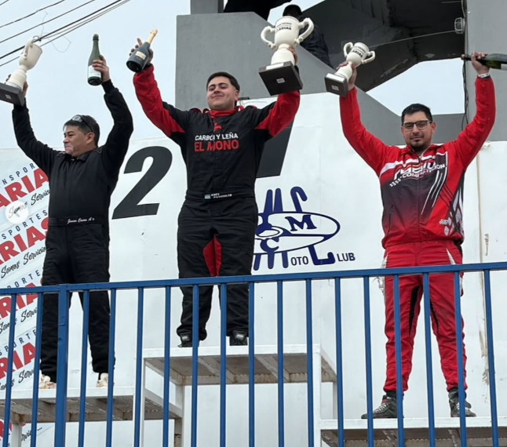

Abel Panquilto se llevó una final con alta cuota de abandonos

La sexta fecha de la Monomarca R12 tuvo un fin de semana intenso en el Autódromo General San Martín, con una gran cantidad de autos en pista y una final marcada por los abandonos de varios protagonistas del campeonato.
En clasificación, el más rápido fue Marcos Panquilto, seguido por su hijo Abel Panquilto y Javier Casas. El top 10 lo completaron: René Ludden (4º), Juan Kristiansen (5º), Danilo Pachmann (6º), Federico Baima (7º), Ezequiel González (8º), Héctor Montenegro (9º) y Juanjo Campano (10º).
Series
1ª Serie: triunfo de Marcos Panquilto, escoltado por Javier Casas y Federico Baima.
2ª Serie: victoria para Federico Turrez tras un gran avance, seguido por Danilo Pachmann y Abel Panquilto.
La final comenzó con 26 autos en pista, pero solo 11 lograron completar la totalidad de vueltas. Federico Turrez, ganador de la serie más rápida y largando desde la pole, sufrió un accidente en la vuelta 5 junto a otros dos autos y quedó fuera de competencia. También abandonaron varios referentes del campeonato: Juan Kristiansen, en la vuelta 9. Gianfranco Mesiti, en la vuelta 12 por problemas con la bomba de agua. René Ludden, en la vuelta 13. Marcos Panquilto, uno de los líderes del torneo, largó 16º y llegó 9º tras sufrir la rotura de la polea del cigüeñal, luego de haber peleado por la segunda colocación detrás de su hijo. Finalmente, la victoria fue para Abel Panquilto, seguido por Javier Casas y Enzo Fueyo. La fecha también marcó el regreso de Andrea Vázquez con su máquina Nº45.
Con estos resultados, el campeonato queda más abierto que nunca. La próxima fecha será doble en el Autódromo Mar y Valle de Trelew, los días 12, 13 y 14 de septiembre, con las fechas 7 y 8 en juego.